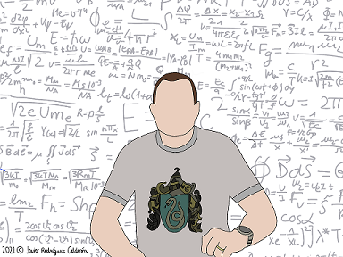

|
Docència
Treball de recerca
-
Treballs actuals. Període 2025-26.
- Joves i lectura.
- Colonització de Mart.
- La psicopatia.
- Neurologia.
- Psicòpates funcionals.
-
Propostes treball de recerca. Curs vinent.
- Les matemàtiques darrera de Google.
- Teoria Gaia i canvi climàtic.
- Simulació de vols tripulats interplanetaris.
- Simulació de polítiques macroeconòmiques per ordinador.
- Xarxes tròfiques i homologia simplicial.
- Entropia de Shannon i teoria de la informació.
- Termodinàmica avançada. L'anell de Kac.
- Edició avançada de textos científics. TeX + TikZ.
- En què consisteix el Treball de recerca en 28 línies. (pàg 19
Decret Oficial)
- Orientacions generals per l'elaboració del Treball de recerca.
- Eines per preparar l'exposició oral.
- Consells per escriure l'abstract.
Altres
|